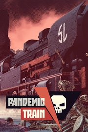

Pandemic Train
Detalles
|  | |
| Tiempo de juego | No Jugado |
| Última actividad | Nunca |
| Añadido | 11/13/2024 0:35:38 |
| Modificado | 11/13/2024 1:06:03 |
| Estado de finalización | No Jugado |
| Librería | Playnite |
| Fuente | PORCHE |
| Plataforma | PC (Windows) |
| Fecha de lanzamiento | 10/18/2023 |
| Puntuación de la Comunidad | 60 |
| Puntuación de la Crítica | |
| Puntuación de usuario | |
| Género | Acción Estrategia Simuladores |
| Desarrollador | Trigger Labs |
| Editor | Games Operators PlayWay S.A. |
| Característica | Logros De Préstamo Familiar Un Jugador |
| Enlaces | Punto de encuentro Discusiones Guías Noticias Página de la tienda PCGamingWiki Logros |
| Tag | 2.5D Acción Ambientales Bélicos Buena trama Construcción de bases Estrategia Exploración Fabricación Gestión de inventario Historia alternativa Indie Las elecciones importan Posapocalípticos Roguelike Sandbox Simulación Supervivencia Trenes Un jugador |
Descripción
¿Qué es el Pandemic Train?
En el Pandemic Train, diriges la tripulación de un tren que atraviesa el desierto postapocalíptico, diezmado por la guerra y la plaga mortal. Tu objetivo es sobrevivir lo suficiente para descubrir la cura...o morir en el intento. ¡El destino de la humanidad está en tus manos! ¡Comienza tu viaje hoy!
¡Aquí diriges tú!
Pandemic Train es un juego de supervivencia con elementos roguelike y de estrategia en el que diriges a la tripulación y a los pasajeros a bordo de un viejo tren propulsado por una máquina de vapor. La trama tiene lugar en una línea temporal alternativa del siglo XX, cuando una catastrófica epidemia de virus diezma la población mundial. Una misteriosa plaga mata a las personas infectadas en 24 horas, lo que provoca pánico generalizado, disturbios y guerra. El mundo está en ruinas y tú eres la única esperanza para su supervivencia. ¡Explora los páramos, recolecta recursos, lucha contra bandidos y encuentra una cura para una enfermedad mortal!
¡Sobrevive!
En Pandemic Train el mundo se ha convertido en un lugar muy inhóspito. La gente morirá en el camino y hay que minimizar el daño. Los recursos son escasos, por lo que hay que distribuirlos con mucho cuidado. Y lo peor de todo es que hay muchos lobos hambrientos por ahí. Y por "lobos hambrientos" nos referimos a personas desesperadas que harán cualquier cosa para derrotarte y detener tu búsqueda de la cura. Para derrotar a tus oponentes, cuida los recursos que adquieres y produce. Son limitados, así que úselos con cuidado. Desafortunadamente, este no es el final de las malas noticias...
¡Gestiona los recursos!
En la dura realidad de Pandemic Train, debes ser autosuficiente: cultivas tus propios alimentos, crías el ganado, recolectas y purificas tu propia agua potable y te encargas de un suministro adecuado de municiones. Tienes que utilizar cada pedazo de chatarra o basura a tu disposición y convertirlo en algo útil. Esto a menudo conduce a decisiones difíciles, por ejemplo: rara vez hay suficientes medicamentos para todos, por lo que tendrás que decidir quién merece el tratamiento y quién sufrirá o incluso se dejará morir.
¡Lucha contra la plaga!
El objetivo principal de tus acciones es crear una vacuna y salvar a los restos de la humanidad de la extinción. Cuanto más tiempo consigas mantener el tren en movimiento, menos probabilidades habrá de que la tripulación entre en contacto con el virus y tus científicos tendrán más tiempo para trabajar en la medicación. Puede personalizar el tren según sus necesidades: decida cuántas personas hay en él y cuántos vagones se conectarán a la locomotora. Pero recuerda: cuanto más grande sea la fiesta, más difícil será mantenerla bajo control. Eres la única esperanza para la humanidad. Eres la última esperanza… para la humanidad.